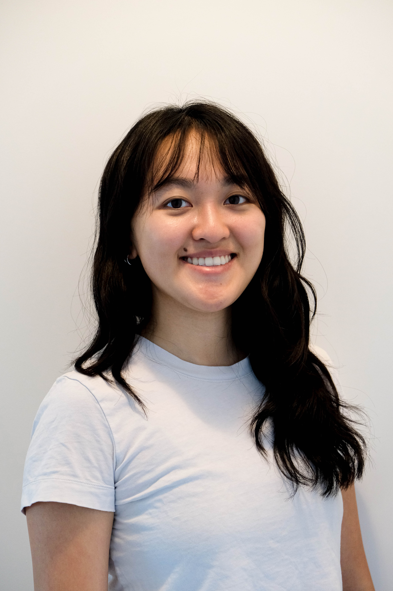

Riling Chen is an architectural designer completing a Master of Architecture at the University of Toronto, following a Bachelor of Architectural Studies at the University of Waterloo. Her work focuses on material expression, craft, and the relationship between digital tools and built form. She has worked in New York, Vancouver and Toronto on small- to mid-scale cultural and community projects, contributing from early concept development through design detailing and drawing production. Her experience in collaborative studio environments has shaped a design approach that balances conceptual clarity with technical rigor.
University of Toronto
John H. Daniels Faculty of Architecture, Landscape & Design [2024 - 2026]
University of Waterloo [2017 - 2022]
Teaching Assistant, ARC201: Design Studio [Winter 2025]
LGA Architectural Partners [Jan 2024 - July 2025]
spacedagency [Feb - Dec 2023]
studioHuB Architects [Jan - Apr 2022]
IBI Group [Jan - Aug 2021]
Norm Li [Sept - Dec 2019]
NBBJ [Jan - Apr 2019]
OAA Design Excellence Award, 2021
Outstanding Student Design Work, 2021
CISC Steel Design Competition Finalist, 2018